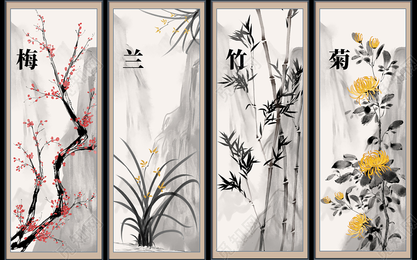

齐白石的虾
一，简练概括，超越生活。齐白石画虾经过了一个由繁到简的过程，为了追求简洁的效果，他曾一度将虾身由六节缩为五节，虾的挠足也大大减少，真正达到了“以少胜多”的神效。
二，墨法高超，晶莹剔透。齐白石自创的“以水兑墨，墨中点水”的方法，使他画的虾给人一种通体透明、晶莹逼真之感，令人称叹。
三，局部夸张，适度变形。为了突出虾的动感，对虾须、虾钳进行适度夸张放大，超长的虾须与虾钳明显增强了虾的灵动与动势。
四，聚散有法，布局讲究。画虾之难在于如何巧妙地处理肢体的穿插、叠加和呼应，齐白石在这一点上有精深的研究，疏密安排恰当，拥而不挤，密而不乱。为了突出画外之意，每有“半虾”之处理，大有画外之音。
五，以书入画，绵中带刚。尽管在画虾中以墨法表现为主，不见了白石老人在其它花鸟画中常见的高超的“飞白”表现，但非凡的书法功力使他画的虾处处软中含硬，润中有刚。
六，活灵活现，生动传神。齐白石画虾的最大特点是一个“活”字，他画的虾个个都跃然纸上，活力四射。
梅兰竹菊指：梅花、兰花、竹、菊花。被人称为“四君子”。品质分别是：傲、幽、坚、淡。
梅、兰、竹、菊成为中国人感物喻志的象征，也是咏物诗和文人画中最常见的题材，正是根源于对这种审美人格境界的神往，也是咏物诗文和艺人字画中常见的题材，号称花中四君子。四君子并非浪得虚名，它们各有特色 ：
梅：探波傲雪，剪雪裁冰，一身傲骨，是为高洁志士；
兰：空谷幽放，孤芳自赏，香雅怡情，是为世上贤达；
竹：筛风弄月，潇洒一生，清雅澹泊，是为谦谦君子；
菊：凌霜飘逸，特立独行，不趋炎势，是为世外隐士。
